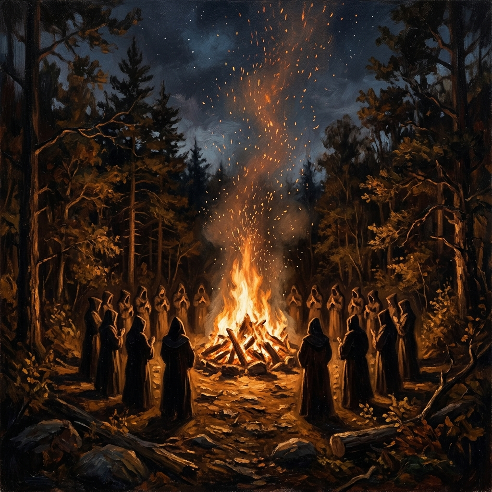
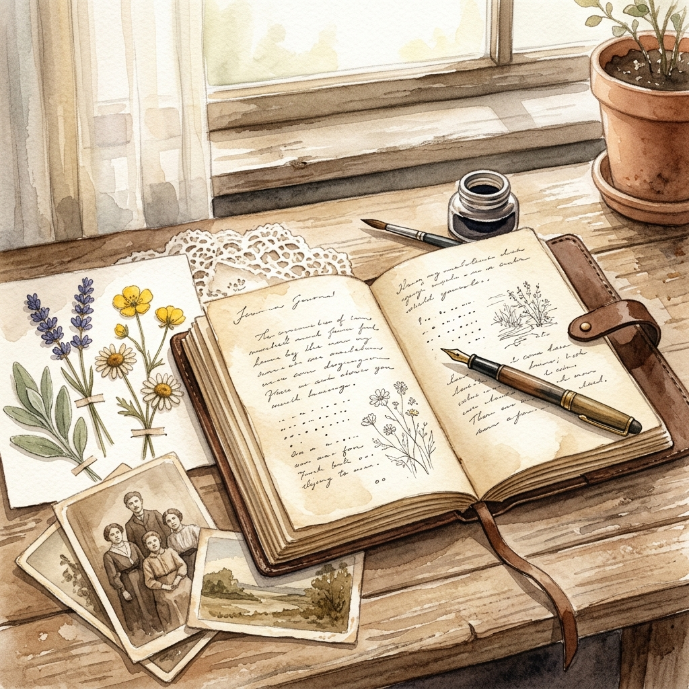
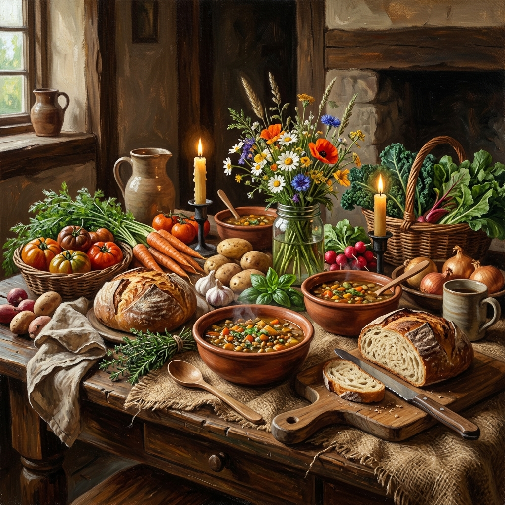
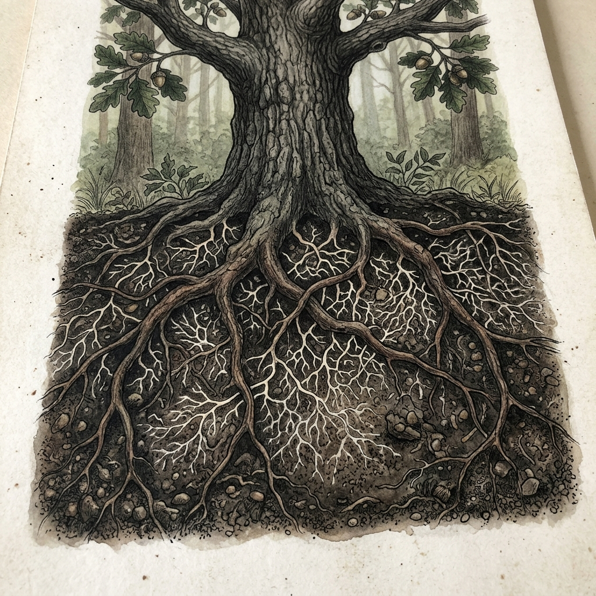
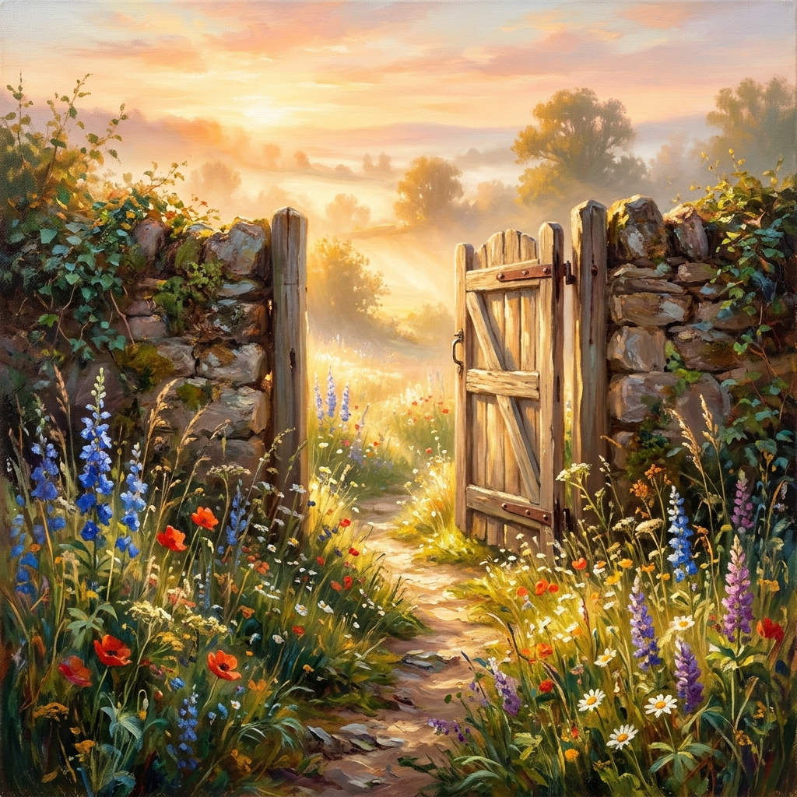
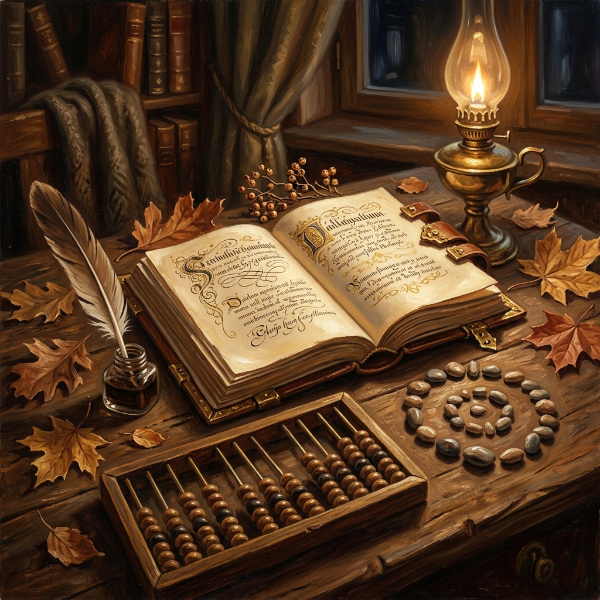
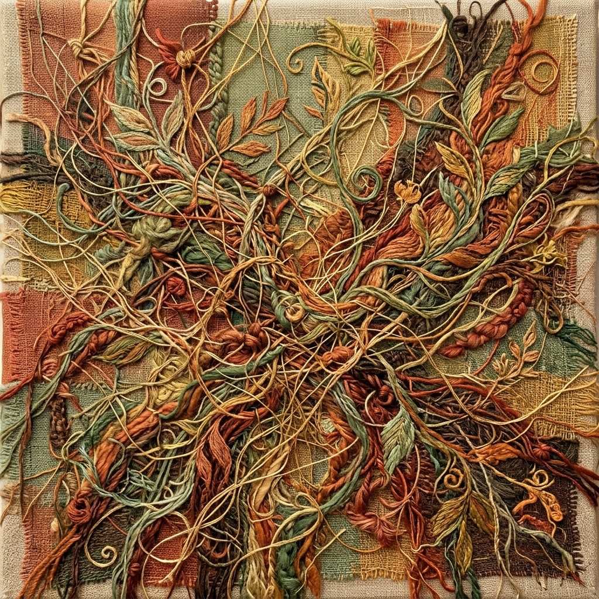

Journeyland presents
A two-day gathering for land-based living
August 15 – 16, 2026 | The Living Centre, London ON
Save Your Place
Everyone who comes holds a piece of what makes this place alive.
We're calling them roles — but really they're ways of belonging.
We all have a role to play in participating, bringing practical skills,
sharing cultural knowledge, and offering lived experience, so we may learn together.
A gathering to convene and explore the practical, cultural, and ecological foundations of building a local ecovillage in the London region.
The program blends workshops, storytelling, hands-on learning, and community dialogue. The event will attract people interested in living closer to the land, local leaders, community organizers, growers, builders, creatives, and others who value cooperation and shared stewardship.
A participatory immersion that blends connecting with the land and each other, storytelling, and practical skill-building. Hear from ecovillage leaders, join workshops on ecovillage design, and participate in hands-on demos like natural building and permaculture.
There will be opportunities to join leadership circles, so we can take our learnings and start to take action towards our collective vision.
Trauma can be experienced at any age and across generations. A healing-centred approach offers a more holistic path to fostering well-being. Our goal is to bring together collective healing practices found throughout history and across the land.
Inspired by and in service to nature. Land as a teacher has many layers: language, geography of stories, cosmologies, relationality, and a connection to reconciliation.
A living experience. Workshops, circles, and hands-on learning woven throughout two days.
Every village needs people who tend different parts of the whole. These seven roles are the bones of The Living Village. Each one carries a specific kind of care. Together, they hold the container for everything else that wants to emerge.

Ceremony + Sacred Space
Tends to what is sacred — the energy of ritual, transition, and intentional coming together. Opens and closes spaces. Holds the threshold between ordinary time and village time.
For you if: You've held space before. You're comfortable with silence. You trust timing.

Memory + Documentation
The village memory — capturing moments, voices, fragments that would otherwise disappear. Not as a journalist, but as a witness. Builds the Memory Wall. Collects quotes and reflections.
For you if: You notice things others miss. You carry a notebook everywhere.

Food + Body Care
Makes sure no one goes hungry. Mealtime feels like communion, not logistics. Coordinates meals, labels food, facilitates communal kitchen moments.
For you if: You find joy in feeding people. Food is the most concrete form of love.

Infrastructure + Land Care
The invisible work that makes everything visible. Someone set up those chairs. Someone kept the compost sorted. Someone found the extension cord. Sets up, breaks down, trouble-shoots, tends the grounds.
For you if: You see what needs doing before anyone asks. Tending the container IS tending the community.

Welcome + Wayfinding
Holds the portal. The first face someone sees. The last energy they carry home. Welcomes arrivals, orients newcomers, holds departure check-ins.
For you if: You're warm without being overbearing. How someone arrives shapes everything that follows.

Coordination + Wayfinding
The bridge between concept and humans — making sure everyone knows what's happening, when, and where. Handles logistics, answers questions, and helps people find their way through the gathering.
For you if: You're the person who knows how things work. You explain clearly. You like holding the threads.

Connection + Integration
Bridges people, notices who's isolated, holds space for the awkward and the emergent. Introduces strangers, checks in mid-festival, creates skill/need boards.
For you if: Who meets whom matters more than what's on the schedule.
Save the date — add to your calendar
Add to CalendarWe're keeping this first wave small. The ones who say yes will shape what this becomes — not just for August, but for whatever comes after.
Not charity. Not commerce. Belonging.
That's what we're building.
And it starts with you.